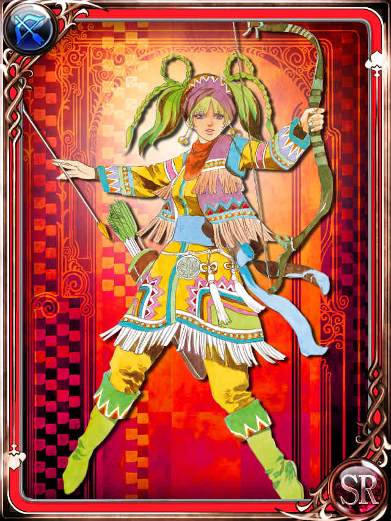
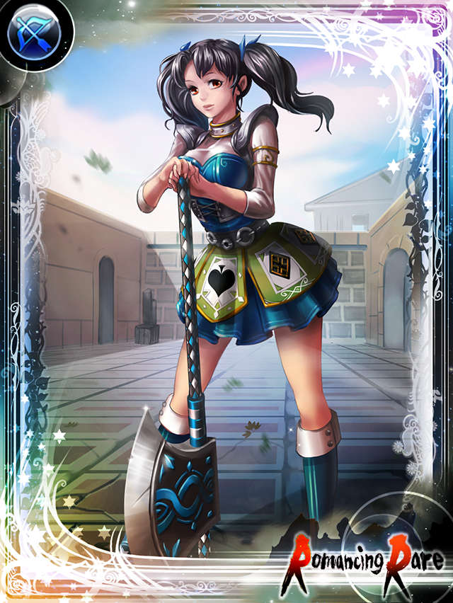

ノーマッド（女）
ノーマッドはロマンシング サガ2に登場するクラスです。
参考：ロマンシングサガ２ （ロマサガ２・romasaga2） 攻略の手引き > ノーマッド♂
| キャラクタ名 | 腕 | 器 | 魔 | 理 | 術 | 早 | 体 | LP | WH | JH | 閃 | 術法 | 技能 |
|---|---|---|---|---|---|---|---|---|---|---|---|---|---|
| ファティマ | 15 | 18 | 18 | 23 | 18 | 17 | 13 | 8 | +2 | -5 | 弓 | 地 | 斬殴射 |
| ベスマ | 16 | 17 | 18 | 12 | 30 | 16 | 15 | 9 | +1 | -6 | 弓 | 火 | 殴射 |
| アリア | 14 | 19 | 20 | 10 | 40 | 16 | 13 | 9 | +1 | -7 | 弓 | なし | 殴射 |
| ミズラ | 14 | 19 | 17 | 13 | 25 | 18 | 14 | 10 | +2 | -5 | 弓 | 地 | 殴射 |
| アズィーザ | 14 | 18 | 18 | 11 | 32 | 17 | 15 | 6 | +1 | -6 | 棍棒 | なし | 殴射体 |
| ドニヤ | 15 | 19 | 19 | 13 | 31 | 16 | 13 | 10 | +2 | -7 | 剣B | なし | 殴射 |
| ノーズハトゥ | 12 | 20 | 16 | 11 | 26 | 19 | 14 | 11 | +1 | -6 | 弓 | 風 | 殴射 |
| シャハラザード | 14 | 20 | 17 | 12 | 27 | 18 | 14 | 12 | +2 | -6 | 弓 | 地 | 殴射 |
このため、ロマサガ2のリマスター版で登場する「陰陽師」を除けば、冥の合成術で最強の威力をたたき出すことができます。
キャラメイの由来は「キャラ名の由来：アラビア世界の王女」らしい。千夜一夜物語の登場人物かも？？サイトによって言ってることが違う。。 千夜一夜物語の登場人物って言ってる ろまさが2人名辞典
ファティマ
エンサガ

弓キャラとして実装
原作のRS2では公式イラストは無かったが、小林智美さんの描き下ろしイラストで実装。
エンサガファティマ参考
小林智美さん公式サイト
小林智美さんウィキペディア
旧インサガ
ストーリーには登場するものの、キャラクタとしての実装は無し。

参考：なんかサイト
インサガEC

参考：なんかサイト
ベスマ
実装なし
アリア
実装なし
ミズラ
実装なし
アズィーザ
実装なし
ドニヤ
実装なし
ノーズハトゥ
実装なし
シャハラザード
エンサガ

なぜか斧キャラ
エンサガシャハラザード参考
参考：エンサガDB | 戦士一覧
参考：なんかブログ